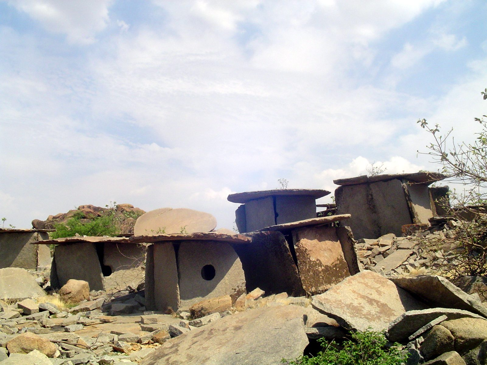

Megaliths and iron
The Iron Age Deccan buried its dead under granite – dolmens, circles and cists by the thousand, as at Hire Benakal – while its smiths learned the iron that became the region’s craft signature.

After the ashmounds, the granite hills acquired cemeteries. The South Indian Iron Age – roughly the last millennium BC, though many megalithic traditions continued into the early centuries AD – is known above all from its megaliths: dolmens, stone circles, cists and cairns, raised in thousands across the Deccan wherever the rock supplied slabs and boulders ready-made. At Hire Benakal, across the Tungabhadra from Hampi, several hundred granite dolmens crowd a single hilltop – one of the subcontinent’s great megalithic landscapes, in the same stone, and by the same logic of easy slabs, as the Neolithic sites before it and the imperial city after.
The graves’ furniture announces the new economy: iron, in axes, arrowheads, horse-bits and the distinctive Black-and-Red Ware pottery of the period. Iron smelting on the peninsula is now dated in places well back into the second millennium BC, and the Deccan’s ores – the Dharwar belts’ hematite among them – fed a craft tradition that ran unbroken into the historic period. Its eventual masterpiece belongs to a later entry: the crucible steel of Telangana that the world called wootz.
The megalith builders left no texts, and their social world is reconstructed from graves, settlements and the first inscribed objects that arrive at the period’s end, as the Deccan enters the horizon of the Mauryan south and the early historic towns. In this collection’s terms they complete the plateau’s furnishing: by 300 BC the Deccan has fields, herds, iron, roads and monuments – everything the dynasties of the other timeline will inherit, tax and fight for.
Sources
- Upinder Singh, A History of Ancient and Early Medieval India (Pearson, Delhi, 2008)
- K. Rajan, ‘Iron Age–Early Historic Transition in South India: An Appraisal’, Padmashri Amalananda Ghosh Memorial Lecture (Institute of Archaeology, Archaeological Survey of India, New Delhi, 2014)
- Udayaravi S. Moorti, Megalithic Culture of South India: Socio-economic Perspectives (Ganga Kaveri, Varanasi, 1994)